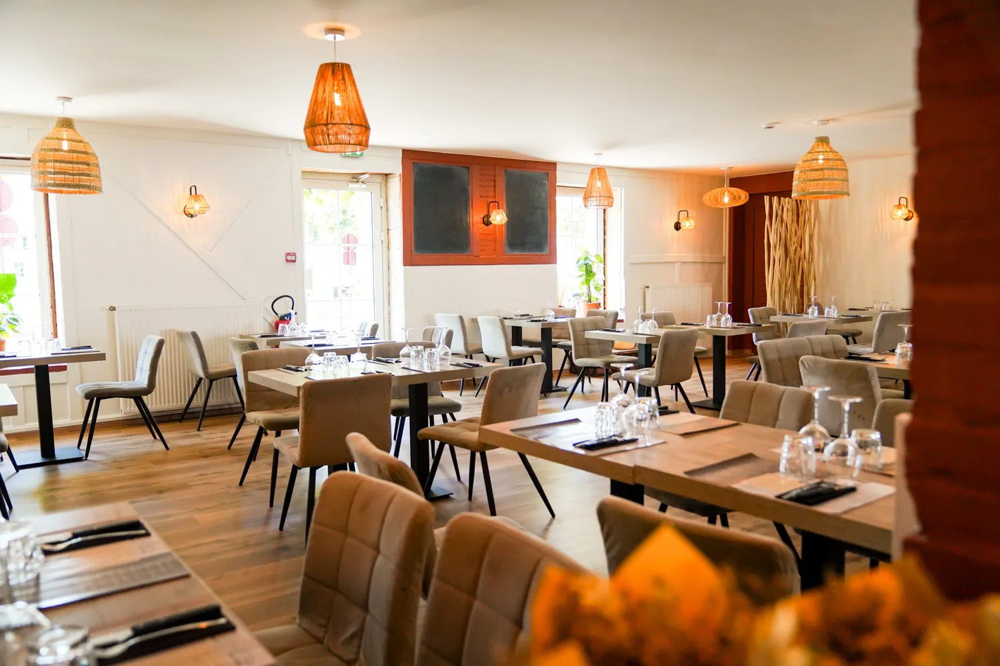

Accueil / Réserver
Votre table vous attend
Choisissez votre restaurant, le jour, l’heure et le nombre de couverts. Ou réservez une chambre à l’Hôtel des Lys.

Réservation en ligne
En 30 secondes
Vous recevez une confirmation par e-mail. Pour un grand groupe, appelez directement le restaurant.